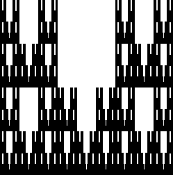

|  |
This fractal is self-affine instead of self-similar because the pieces are scaled by different amounts in the x- and y-directions.
The coloring of the pieces on the right emphasizes this.
Each piece is scaled by 1/3 in the x-direction and by 1/2 in the y-direction.
Return to More Examples